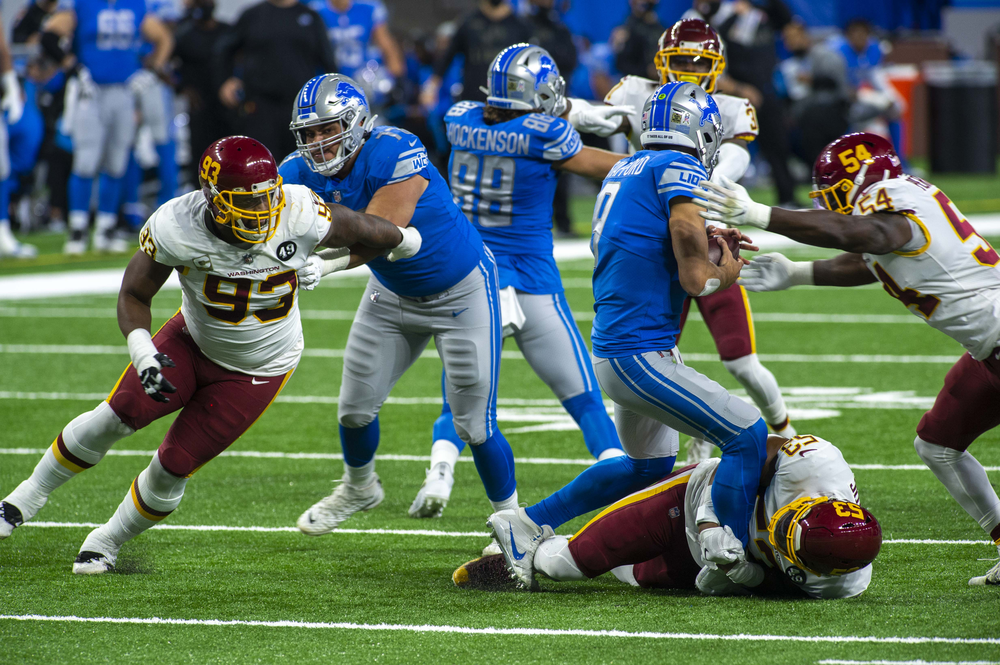

- Basketball
- Football
- Golf
Basketball is a fun sport to watch, especially college basketball, and it is also very fun to play.

Football is my favorite sport to watch as it is very exciting even though I don't play it.
Golf is a relaxing sport to watch and it is easy to have it on in the background while you are doing other things since it is very long.